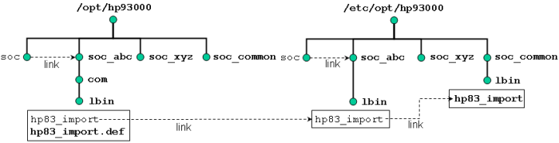

Customizable Scripts
SmarTest provides a number of customizable scripts which are called by the Test Program Explorer.
SmarTest expects that all these scripts reside in the directory /opt/hp93000/soc/com/lbin.
File paths and links
The following figure illustrates the call sequence by the example of the script hp83_import:

Genuine directories and files are in bold, links in normal type.
After the software installation this directory contains a default version <script_name>.def of the scripts and a symbolic link <script_name> that points to the directory
/etc/opt/hp93000/soc/lbin.
This directory, in its turn, contains only symbolic links <script_name> to the directory
/etc/opt/hp93000/soc_common/lbin.
This latter directory contains the scripts that are actually executed and can be customized by the user.
The link in /etc/opt/hp93000/soc/lbin is interpolated between /opt/hp93000/soc/com/lbin and /etc/opt/hp93000/soc_common/lbin for the following reason:
soc in /etc/opt/hp93000 is also a symbolic link that points to a certain version of SmarTest. Each version has its own /etc/opt/hp93000/soc_<SmarTest_version>/lbin directory.
Use cases
- SmarTest is installed on a workstation for the first
time:
<script_name>.def will be copied to /etc/opt/hp93000/soc_common/lbin/<script_name>, that is, the default versions are automatically activated.
- Installing SmarTest on a workstation that already contains an earlier version of
SmarTest:
The versions of the scripts in /etc/opt/hp93000/soc_common/lbin will not be overwritten by the new installation, since they might have been modified by the user.
- Using the new default version after installing an new version of SmarTest:
You have to copy /opt/hp93000/soc/com/lbin/<script_name>.def to /etc/opt/hp93000/soc_common/lbin/<script_name>. On a Console window, type:
cp /opt/hp93000/soc/com/lbin/<script_name>.def/etc/opt/hp93000/soc_common/lbin/<script_name>
- Customizing the scripts on device level:
Copy /opt/hp93000/soc/com/lbin/<script_name>.def to the root directory of the respective device as <script_name> and customize it as required.
- Customize the script license_checkout_failure:
At startup SmarTest reads the model and device license file and resolves the requested capability into required licenses (for details, see The System .lic license files). If the check out fails SmarTest calls the script license_checkout_failure.
Customize the script as required, for example, to send a mail to the system administrator.
Functional changes
- Introduced before SmarTest 6.3.2
- SmarTest 7.0.4: Script license_checkout_failure introduced